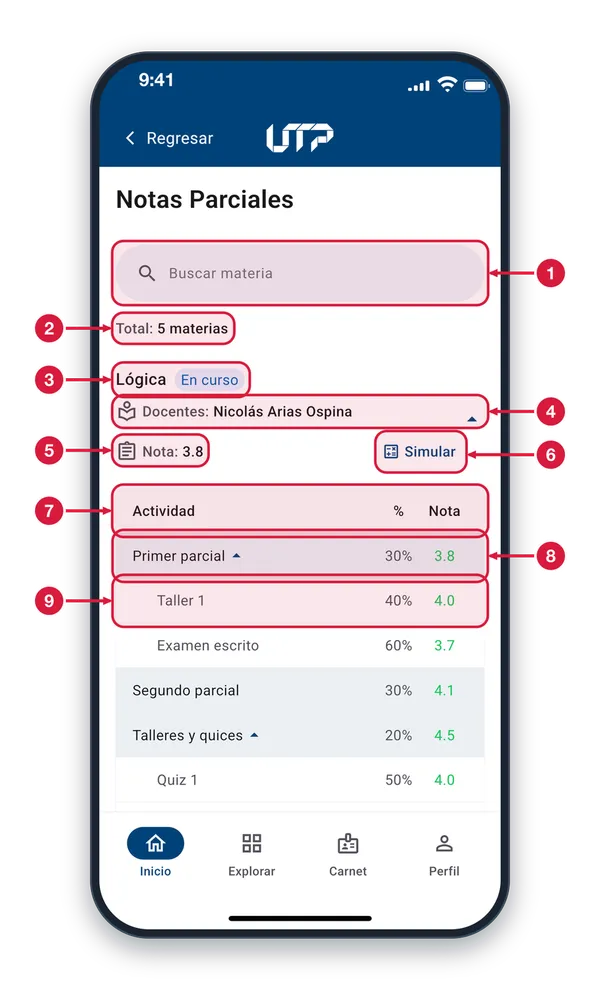
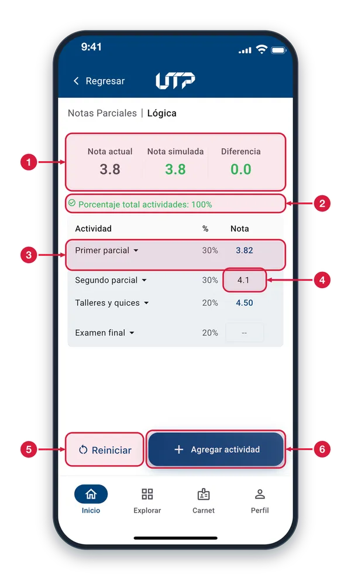
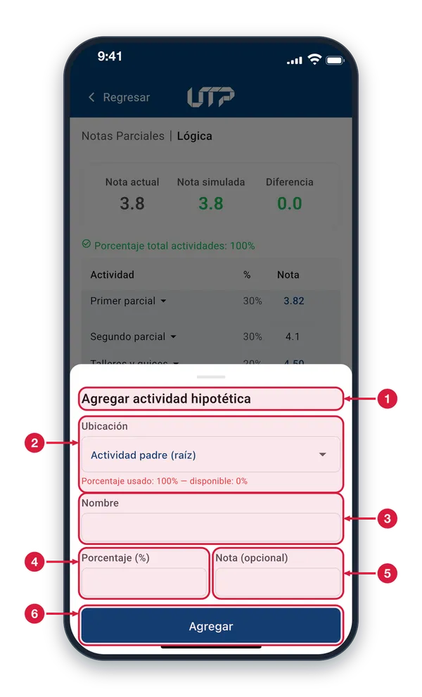
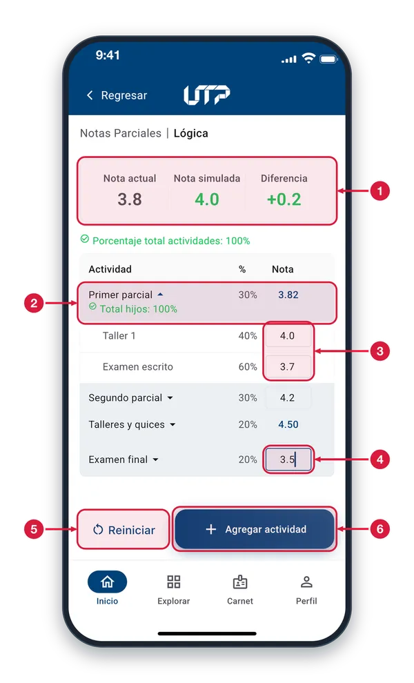

Consulta tus calificaciones del semestre en curso: cada materia muestra tu nota acumulada, el docente a cargo y un simulador para proyectar tu resultado.
El módulo de Notas Parciales cuenta con:
Vista general de todas tus materias del semestre
Nota acumulada y docente de cada curso
Estado del curso: En curso o Cancelado
Barra de búsqueda por materia
Simular: agrega actividades con su porcentaje y mira tu nota final
Solo podrás ver y hacer uso del módulo NOTAS PARCIALES cuando te loguees en la aplicación
Notas parciales1 de 4
Revisa las notas que llevas en cada materia del semestre, actividad por actividad. Entras desde Perfil o desde Explorar.

Buscar materia Escribe el nombre de una materia o de su docente, sin importar tildes ni mayúsculas, y la lista se filtra mientras escribes. Si nada coincide, verás «Sin resultados».
Total de materias Cuenta todas tus materias con notas en el semestre. El número no cambia cuando buscas.
Materia y estado El nombre de la materia y su estado: «En curso» en azul o «Cancelado» en rojo.
Docente y despliegue El nombre del docente (o «Sin asignar»). La flecha de la derecha indica que la tabla está abierta: toca la tarjeta para ocultarla o mostrarla.
Nota de la materia La nota que llevas hoy en la materia. Si aún no hay nota, verás «--».
Simular Abre el simulador de esa materia, donde pruebas notas hipotéticas para ver cómo cambiaría tu nota. Lo que simules no se guarda.
Columnas de la tabla Actividad es el nombre; % es lo que pesa en la nota; Nota es lo que sacaste. La nota va en verde si es 3.0 o más, en rojo si es menor y «--» si aún no hay nota.
Actividad principal Las filas con fondo azul claro son actividades principales, como un parcial. Si tienen flecha, toca la fila para mostrar u ocultar sus sub-actividades.
Sub-actividad Las filas con sangría son parte de la actividad de arriba. Su % es lo que pesan dentro de ella y con ellas se calcula la nota de esa actividad.
Simulador de notas2 de 4
Prueba qué nota obtendrías con notas hipotéticas, sin tocar las reales. Entras con «Simular» en una materia.

Resumen de notas Nota actual es la que llevas hoy. Nota simulada se recalcula con las notas que pruebes. Diferencia es la resta: verde si sube o queda igual y roja si baja.
Porcentaje total Suma de lo que pesan las actividades principales. Con 100% el texto sale en verde; si no suma 100%, sale en rojo con el aviso «debe ser 100%».
Actividad principal Fila con flecha: tócala para ver sus sub-actividades. Su nota, en azul, se calcula sola con las de sus sub-actividades, así que no se escribe.
Celda de nota Toca la celda y escribe una nota de 0 a 5, con un decimal. Una celda vacía («--») es una actividad sin nota y no suma hasta que le pongas una.
Reiniciar Descarta todo lo que simulaste: devuelve las notas reales y quita las actividades hipotéticas que hayas agregado.
Agregar actividad Abre un formulario para añadir una actividad que aún no existe, como un examen extra, y ver cómo afectaría tu nota.
Agregar actividad hipotética3 de 4
Añade una actividad de prueba, como un examen extra, para ver cómo cambiaría tu nota. No modifica tus notas reales.

Actividad hipotética Es una actividad inventada solo para probar. Existe únicamente en el simulador: no cambia tus notas reales ni se guarda al salir.
Ubicación y porcentaje Elige dónde va: como actividad principal o «Dentro de» un grupo. Debajo ves el porcentaje usado y el disponible ahí; en rojo si ya no queda nada, y entonces elige otro lugar.
Nombre Escribe cómo quieres llamar la actividad, por ejemplo «Taller extra». Es obligatorio.
Porcentaje (%) Escribe cuánto pesa la actividad, entre 0.1 y 100. No puede pasar de lo que queda disponible en la ubicación elegida.
Nota (opcional) Escribe una nota de 0 a 5 si quieres probarla ya. Si la dejas vacía, la actividad no suma hasta que le pongas nota en la tabla.
Agregar Revisa los datos y agrega la actividad. Si algo falla, te avisa en rojo. Si todo está bien, se cierra el formulario y la actividad aparece en la tabla con un matraz y una X para quitarla.
Simulación en curso4 de 4
Mientras escribes notas hipotéticas, la nota simulada y la diferencia se recalculan al instante.

Nota simulada y diferencia Cambian con cada nota que escribes. La diferencia lleva signo: «+» si tu nota subiría y «-» si bajaría; en rojo cuando baja.
Grupo desplegado Al abrir un grupo ves sus sub-actividades. «Total hijos» suma lo que pesan: debe dar 100%. La nota del grupo, en azul, se calcula sola.
Notas de sub-actividades Cada celda se edita. Escribe la nota que crees sacar; solo acepta números de 0 a 5 con un decimal. La nota del grupo se recalcula con lo que escribas.
Celda en edición El borde azul y el cursor indican la celda donde estás escribiendo. La nota simulada ya incluye el valor que ves en ella.
Reiniciar Borra tus pruebas y deja otra vez las notas reales. Úsalo para empezar un escenario nuevo.
Agregar actividad Agrega una actividad hipotética para probar otro escenario; aparece en la tabla y la puedes quitar con su X.